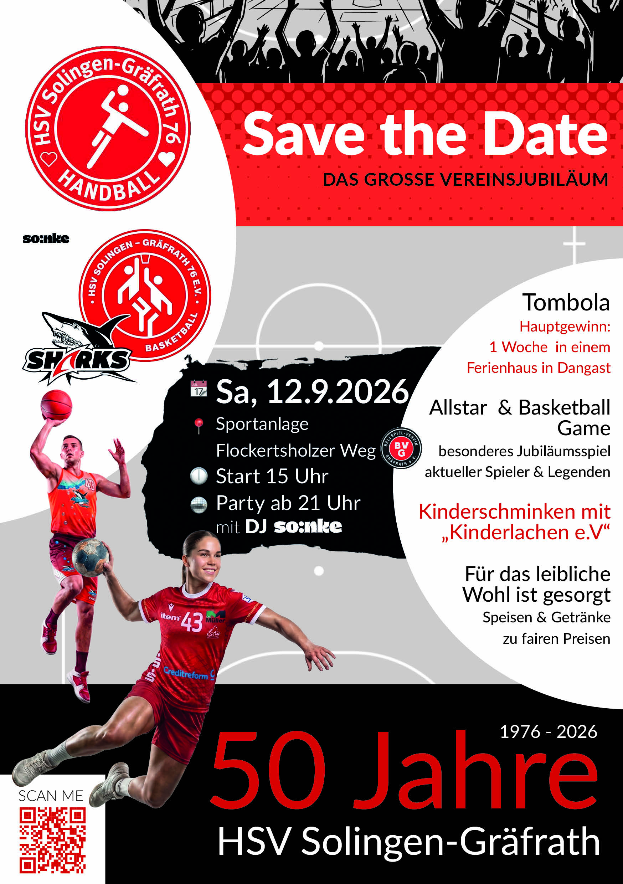
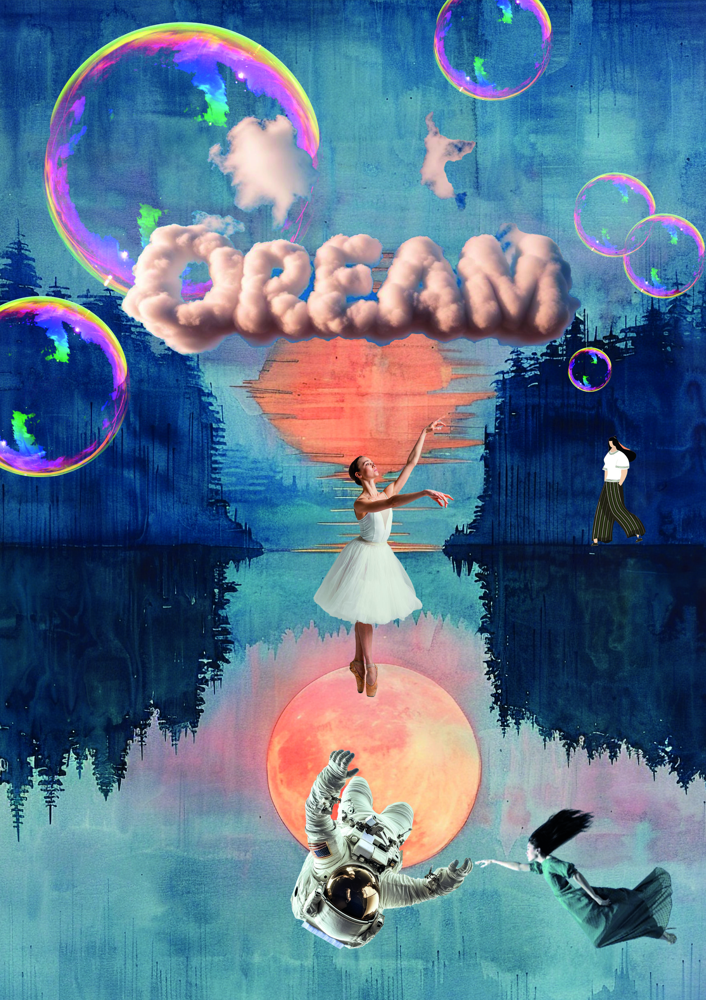
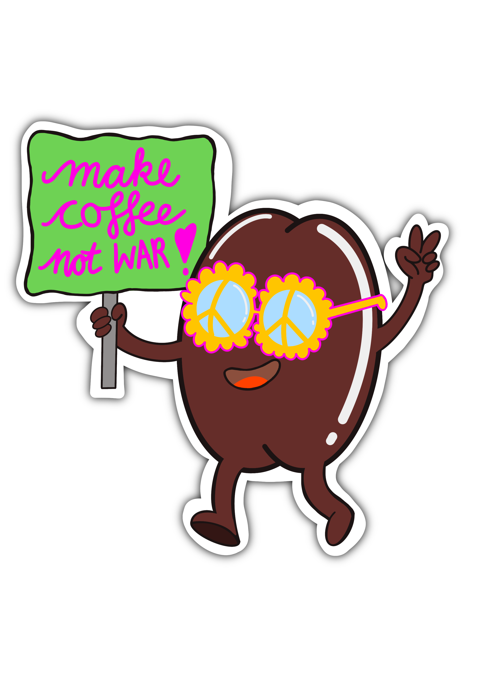

50 Jahre Jubiläum
Layout und Gestaltung eines A5-Flyers sowie dazugehöriger Poster für das Jubiläum des HSV Solingen Gräfrath – mit dynamischen Sport-Motiven.

Traumwelten
Eine surreale, digitale Collage, die die Schwerkraft aufhebt. Verschiedenste Bildelemente verschmelzen in diesem Composing zu einer fantastischen Szenerie, die zum Träumen einlädt.

Make Coffee Not War
Charakter-Entwicklung und Reinzeichnung für einen Sticker-Wettbewerb von Pictoplasma und StickerApp.

Linoldruck
Klassische Drucktechnik trifft auf moderne Motive: Linolschnitt-Drucke aus meinem Kreativ-Label ARTE AIELLO.